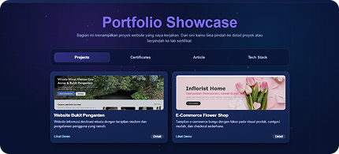

Website portofolio
Platform ini berisi agregasi hasil pekerjaan desain, pengembangan, dan eksperimen digital dalam satu halaman terstruktur. Setiap proyek disusun agar mudah ditelusuri dari ringkasan hingga informasi detail.
Fokus perancangan adalah menghadirkan navigasi yang jelas, visual yang konsisten, dan alur eksplorasi yang cepat untuk pengunjung maupun kolaborator.
Technologies Used

Key Features
- Halaman showcase terpusat untuk menampilkan proyek desain dan web development.
- Struktur konten bertingkat dari ringkasan proyek ke halaman detail per kategori.
- Tampilan responsif agar nyaman diakses pada desktop maupun perangkat mobile.